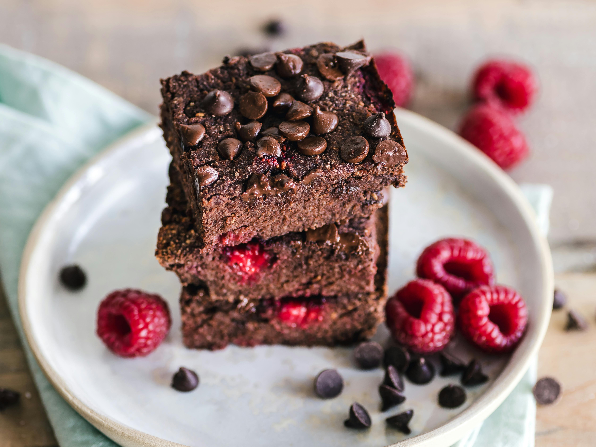

La Fabrique Des Saveurs
Nos meilleurs brownies

Nos brownies, intensément chocolatés, sont sublimés par des framboises juteuses qui ajoutent une touche de
fraîcheur et d’acidité à chaque carré fondant. Leur texture dense et fondante révèle un équilibre parfait
entre la richesse du chocolat et la légèreté des fruits, rendant ce dessert irrésistible pour les amateurs
de gourmandises chocolatées.
Ingrédients raffinés :
200 g de chocolat noir
150 g de beurre
150 g de sucre
3 œufs
100 g de farine
100 g de framboises fraîches ou surgelées
Etapes :
1: Faites fondre le chocolat et le beurre ensemble.
2: Mélangez le sucre et les œufs, puis ajoutez le mélange chocolat-beurre fondu.
3: ncorporez la farine, puis ajoutez délicatement les framboises.
4: Versez dans un moule et faites cuire à 180°C pendant 20-25 minutes..